🎃 할로윈 프리미엄 시안 — 18안 비교
자국 6 · 스킨 6 · 도구 3 · 망토 3. 모두 게임 코드 수정 없는 시안입니다. 움직이는 라이브 시안은 각 절의 링크로 열어 보세요.
한눈에 — 시안 제작자 추천
| 상품 | 추천 | 이유 | 주의 |
|---|
| 🎃 호박불(자국) | B 둥둥 호박불 | 모바일 실제 크기에서 호박 얼굴이 가장 또렷, 드로우콜 1, 공중 자국 위상 | A 꼬마 호박등이 가장 귀엽지만 드로우콜 최대 9 |
| 🦇 박쥐(자국) | C 박쥐 도장 | 바닥 도장 + 비행, 주황 후광, 입자 16 | 낮에는 이식 후 더 희미할 수 있음 |
| 👻 유령(스킨) | B 나이트캡 | 표정·몸이 읽히고 귀 많은 동물에서 덜 어색 | A 이불은 팔·꼬리가 가려져 구현 시 팔 구멍 필요 |
| 🧙 마녀(스킨) | A 클래식 고깔 | 실루엣 분명, 7종 동물 모두 안정, 약 5메시 | 토끼는 모자 0.7배·기울임 보정 필요 |
| 🎃 도구 세트 | A 잭오랜턴 | 날·통이 호박 자체라 할로윈으로 바로 읽힘, 평균 2.3콜 | B 달밤 보라는 최대 5콜 |
| 🦇 망토 | A 펼친 박쥐 날개 | 뒤에서 한눈에 박쥐, 휘두를 때 팔과 안 닿음 | 꼬리 있는 동물은 날개 사이로 꼬리 통과 |
1. 걷는 자국 (호박불 3 · 박쥐 3)
라이브 시안 열기 · 위쪽 기준: 지금 게임의 발바닥·반짝이·반딧불
확인할 점 시안 입자는 일반 혼합이라 낮에도 잘 보입니다. 실제 반딧불(가산 혼합)은 낮에 희미해서, 이식하면 낮에는 더 약해질 수 있습니다.
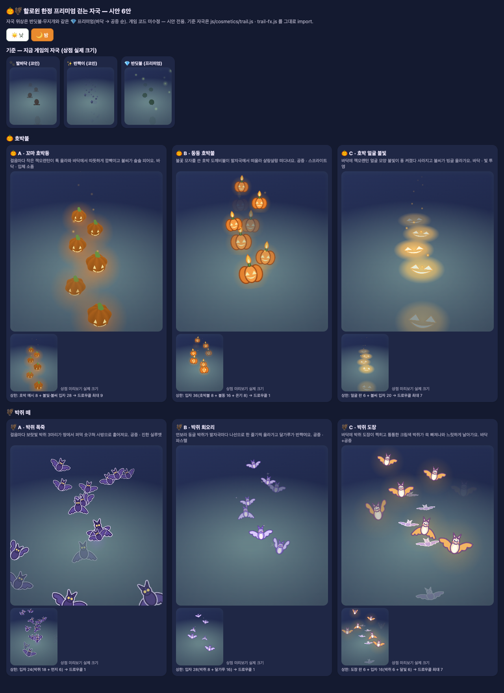
PC · 밤
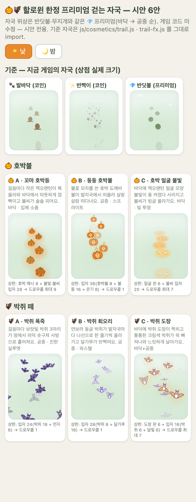
모바일 · 낮
2. 전신 스킨 (유령 3 · 마녀 3)
라이브 시안 열기 · 전 동물 표
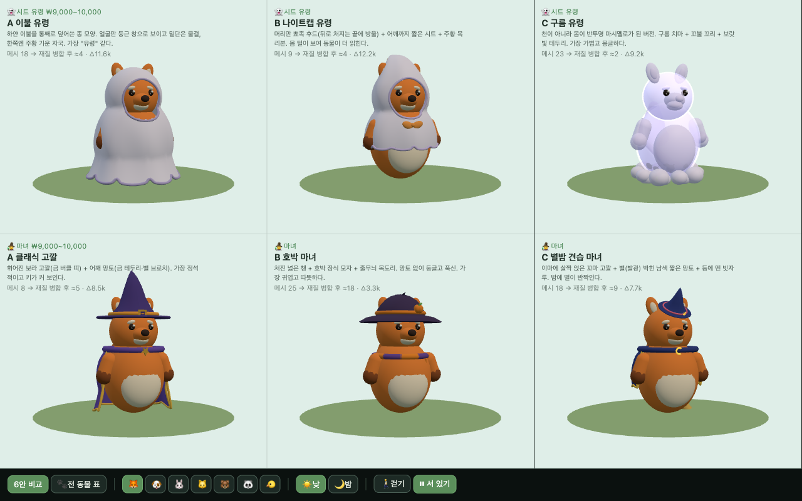
PC · 낮 (여우)
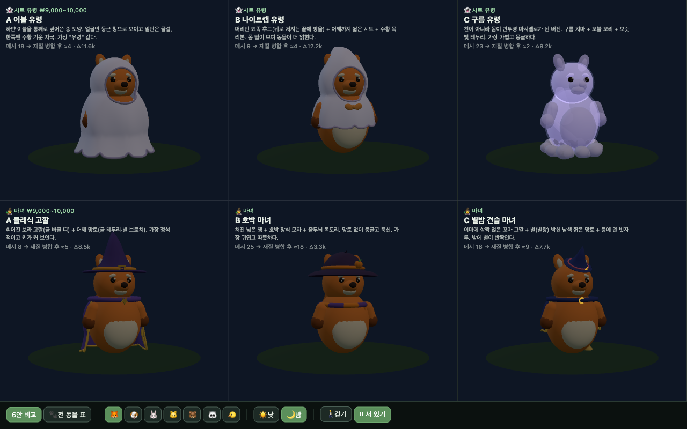
PC · 밤
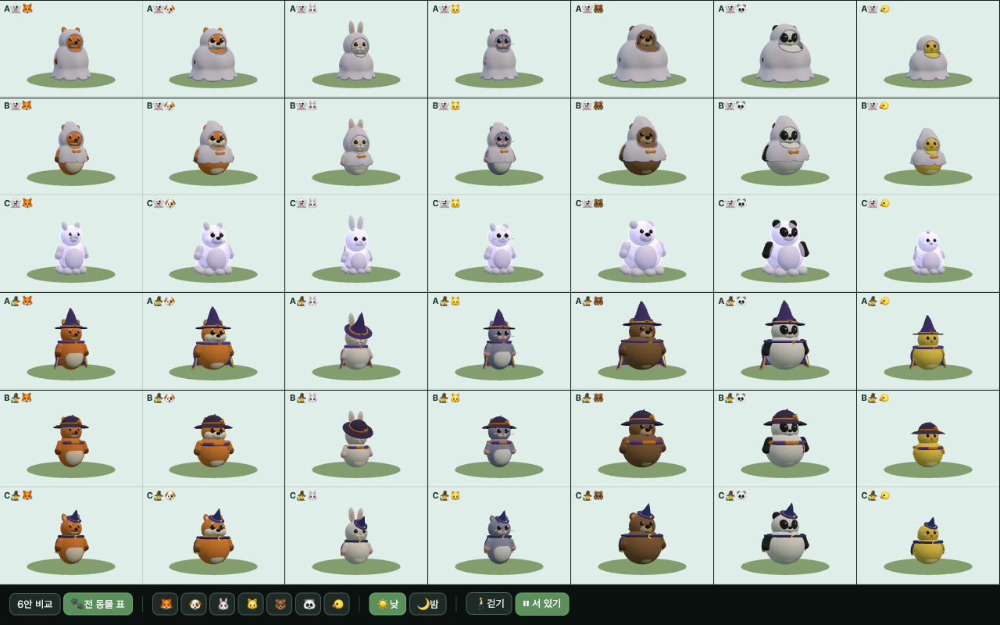
6안 × 동물 7종
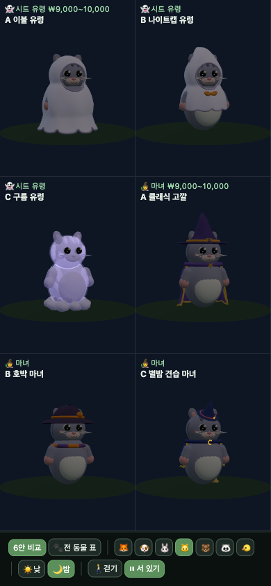
모바일 · 밤 (고양이)
3. 도구 스킨 세트 (호박 3)
라이브 시안 열기 · 도구 9종·쥔 모습·관통 검사 포함
쥐기 검증 4동물×9도구, 세 안 모두 기본 도구와 같은 수준(허공 부유 없음). 물조리개만 기본보다 팔 쪽으로 1~3mm 더 깊음.
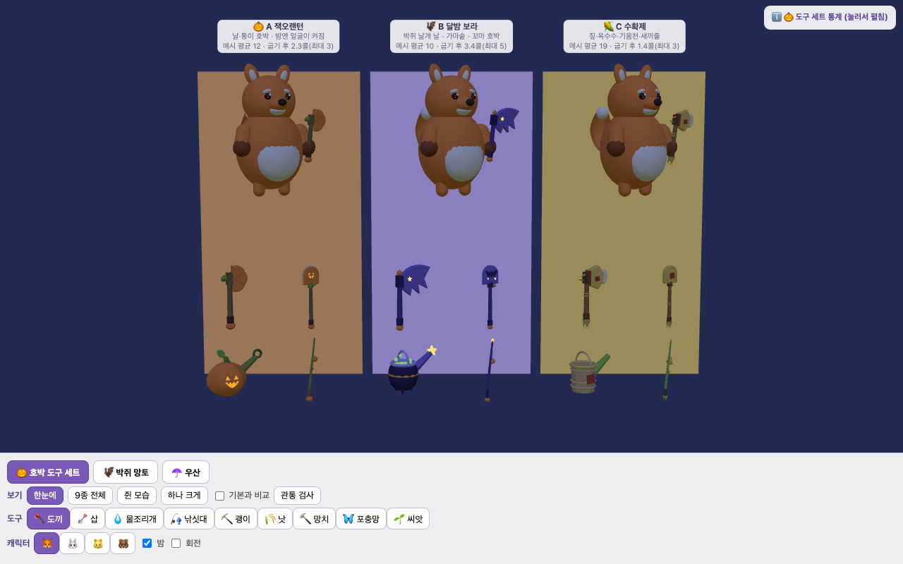
PC · 밤 — A 잭오랜턴 / B 달밤 보라 / C 수확제
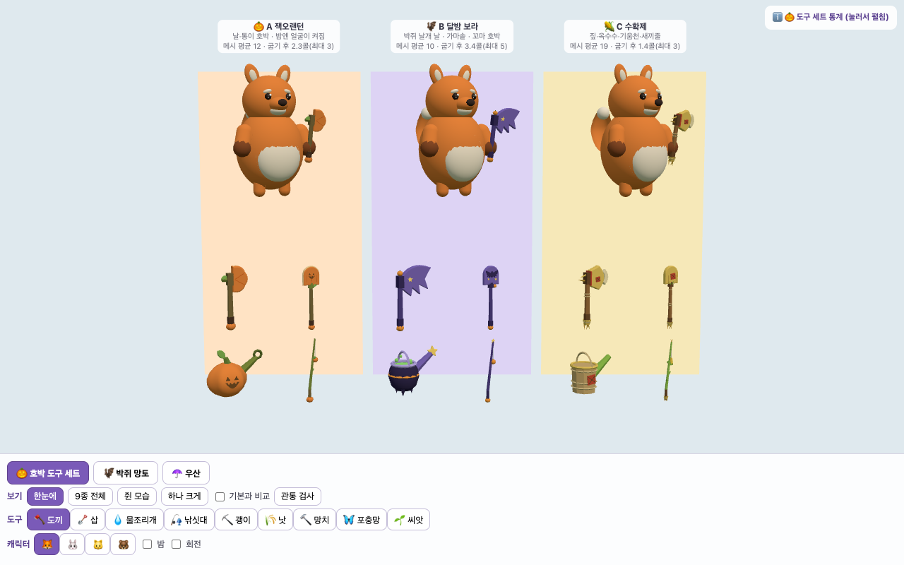
PC · 낮
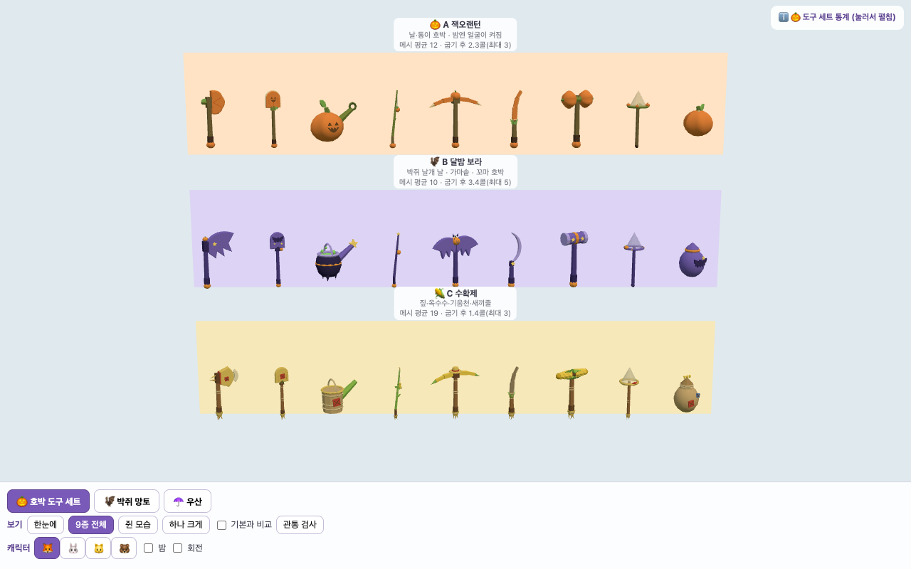
9종 전체 · 낮
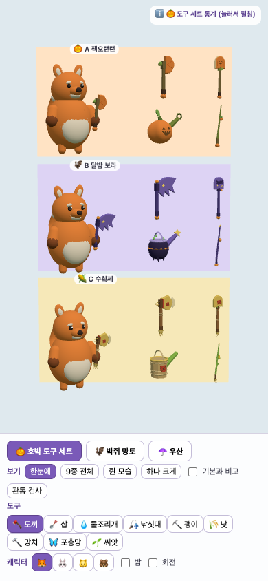
모바일 · 낮
4. 박쥐 망토 (3)
라이브 시안 열기
알아둘 점 망토 안감색이 겉으로 보이는 기존 clothShell 특성이 있습니다(실제 망토도 동일). 의도와 다르면 art.js 수정이 필요합니다.
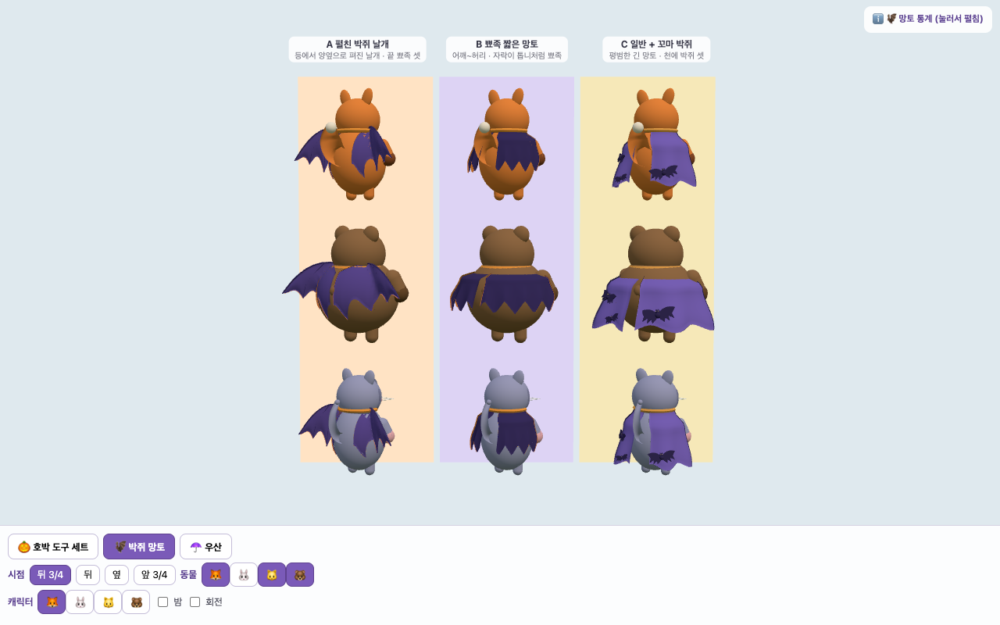
뒤 3/4 · 여우·곰·고양이
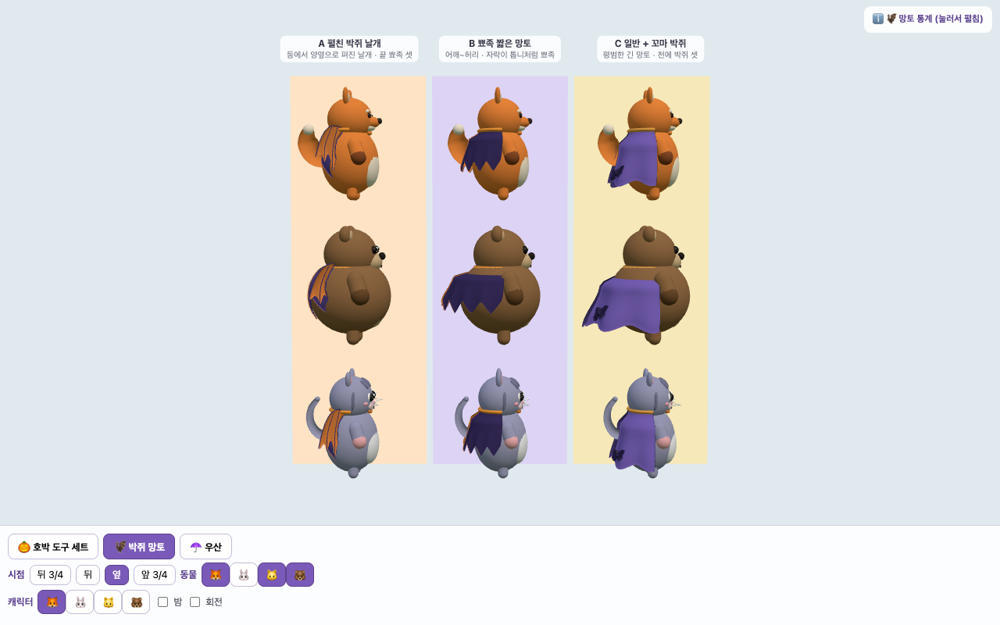
옆
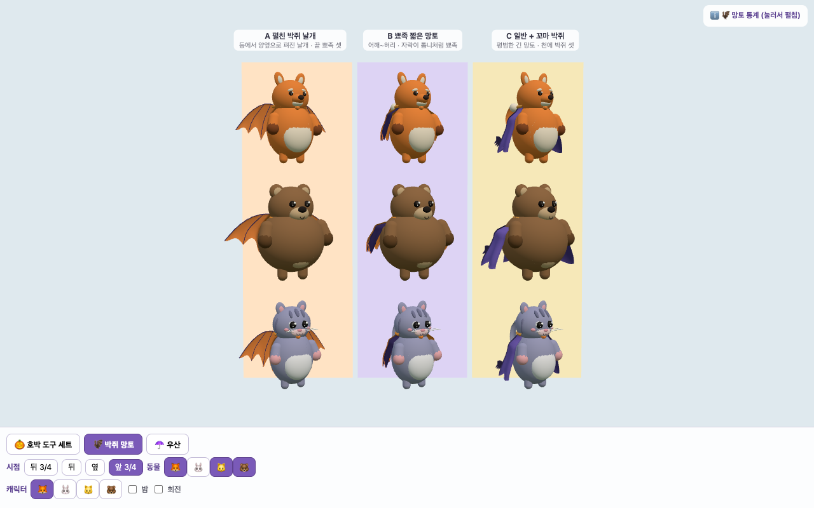
앞 3/4
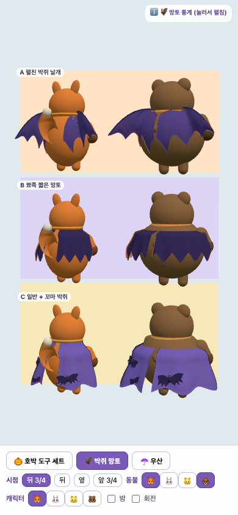
모바일